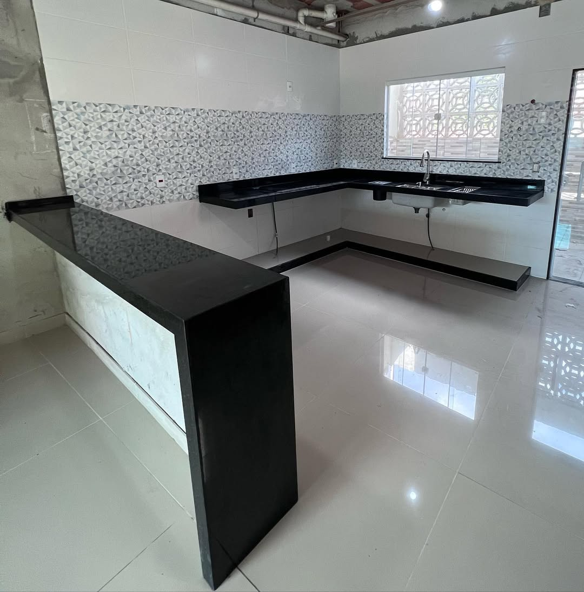
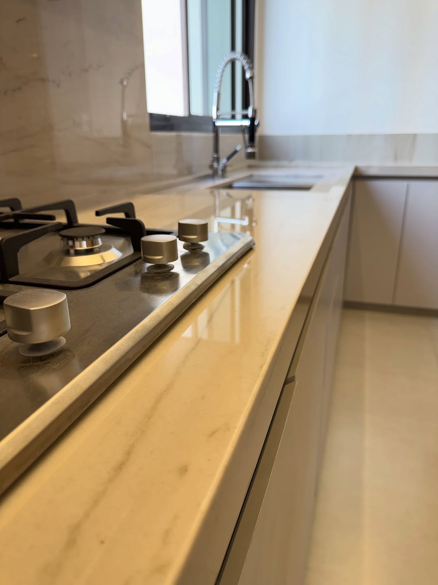

Bancadas e projetos em mármore e granito de alto padrão para residências de luxo na Barra da Tijuca.
Atendimento na Barra da Tijuca
A Barra da Tijuca é uma das regiões mais sofisticadas do Rio de Janeiro, com residências de alto padrão que demandam acabamentos de excelência. A STONELUX atende essa demanda com projetos exclusivos em mármore e granito.
Nossa equipe conhece as particularidades da região e está preparada para atender desde apartamentos de luxo até mansões, sempre com o mesmo compromisso com a qualidade e o atendimento personalizado.
Solicitar Orçamento
Nossos Serviços



Projetos Realizados
